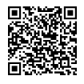

更新时间：2024.4.1
首先感谢鸿洋提供的免费API接口，本文基于免费接口实现功能，主要用于自己练习hos APP.
鸿洋公众号

如果侵犯鸿洋的相关利益联系别删除
1.
我生来平庸，却也生来骄傲。
2.
我知道这世界上没有最好，只有更好；
我想要的一切都要靠自己的努力得到。
3.有梦就去追 没死就别停
4.
我不会试图摘月
我要月亮奔我而来
5.
没有伞的孩子必须努力奔跑
6.
你必须非常努力
才能显得毫不费劲
7.
努力赚钱不是因为爱钱
而是这辈子不想因为钱和谁在一起
也不想因为钱而离开谁
如果问爱情和面包我选择什么 我会说：
你给我爱情就好 面包我自己买
爱情不是依附和取悦
而是各自独立坚强
然后努力走到一起
8.
你脸上云淡风轻
谁也不知道你的牙咬得有多紧
你笑得没心没肺
没人知道你哭起来只能无声落泪
你必须非常努力
才能让人觉得你毫不费力
度过一段自己都能感动的曰子
之后你想要的岁月统统会还给你
9.
努力的意义是什么? 是为了看到更大的世界
是为了可以有自由选择人生的机会 是为了以后可以不向讨厌的人低头 是为了能够在自己喜欢的人出现的时候
不至于自卑得抬不起头
而是充满自信
理直气壮地说出那句话： “我知道你很好，但是我也不差。”
10.
你受的苦 吃的亏
担的责 扛的罪 忍的痛 到最后都会变成光 照亮你的路
11.
出色一点 从能力到容貌
12.
你以为“嫁得好”不用拼?
上面那句是开玩笑 以下才是正文： 亲爱的 说出这句适的人
多半连拼的能力都没有
所以想拉你下水一起混日子 这才是真相
13.
我不喜欢轻易放弃的人
人生不应该在迷茫中度过
14.
这些年我一直提醒自己一件事情
千万不要自己感动自己
大部分人看似的努力
不过是愚蠢导致的
什么熬夜看书到天亮
连续几天只睡几小时
多久没放假了
如果这些东西也值得夸耀
那么富士康流水线上
任何一个人都比你努力多了
人难免天生有自怜的情绪
唯有时刻保持清醒
才能看清真正的价值在哪里
15.
物以类聚 人以群分
什么样的你就会碰到什么样的人
16.
我们总以为来日方长来日方长
习惯蹉躇犹豫 习惯怯懦退缩
可是很多东西
我们无法预料多少个下一秒后
它们就消亡变质了
一旦过了期变了质
其实就很难再挽回补救了
为什么要等到失去才腕叹息
趁当下的喜欢尚且新鲜
趁所有重要的东西还未过期
就该努力奔赴啊
或许结果差强人意但至少
得到的每个答案
都会是不留遗憾的最好的答案